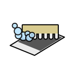

Image Scrubber
About
This is a tool for anonymizing photographs taken at protests. It will remove identifying metadata (Exif
data) from photographs, and also allow you to selectively blur parts of the image to cover faces and other
identifiable information.
Usage
- Click or drag onto the open button to open a photograph.
- The program will display the data it is removing.
- Click okay, and you can then save the scrubbed image by hitting save or right clicking on it and saving
it.
- Maximum size is 2500x2500 pixels - larger images will be scaled down.
- You can select between painting over the image or blurring it out.
- Dragging on the image will paint on or blur it.
- You can change your brush size via the slider.
- The blur function runs on top of shuffled, noisy, upscaled pixels and is fairly secure but sensitive
information should be covered with the paint tool.
Offline Usage
This tool works offline: on a phone you can load the page or add it to the homescreen, then turn on airplane
mode (or turn off wifi/data) before opening any pictures. On a computer, download the zipped code, open the
folder, and open index.html in a browser with the internet turned off.
Data Security
All processing happens directly in the browser — no information is stored or sent anywhere.